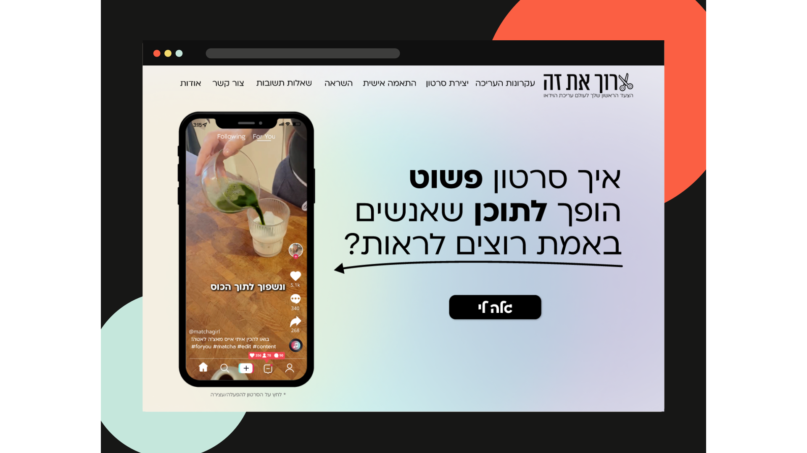

01 / Instructional design case studyInstructional design · Content strategy · UX/UI
Video Editing for Beginners: From Content Analysis to a Guided Learning Website
I identified the knowledge, confidence, and application gaps faced by beginner creators, broke the editing process into a task-based learning sequence, and selected a one-page website as the right format for keeping instruction, examples, and action in one continuous flow.
View instructional case study